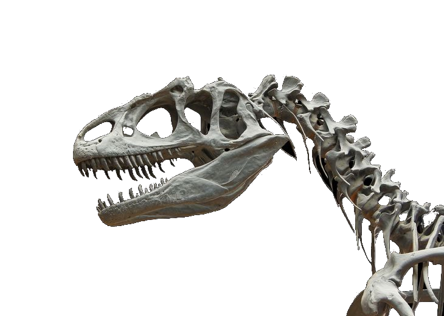
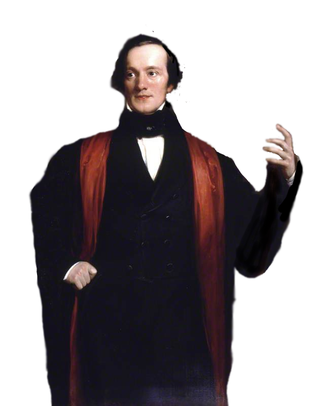

Досліджуймо динозаврів разом!
Тут ви знайдете все про динозаврів. Читати матеріал буде цікавим як любителям, так і фахівцям; як дорослим, і дітям.
Переваги нашого сайту
Перший сайт
для того, щоб детально дізнатись про стародавніх тварин
Динозаври
Інформація про зовнішній вигляд і фізичний дані про цих тварин
Дізнавайся про інші стародавні тварини
Інформація про зовнішній вигляд і фізичний дані про цих тварин
Новини
Останні новини про пошук нових видів динозаврів
Історія динозаврів
Звідки взялися динозаври? У всьому світі час від часу знаходять скам’янілі кістки тварин, яких ми звикли називати динозаврами. Багато знахідок складаються лише з певних фрагментів, але іноді виявляються і майже цілі скелети. Виходячи з відмітних характеристик, таких, як структура черепа, кінцівок і т. д., учені змогли описати безліч різновидів динозаврів. Але виникають проблеми у визначенні динозавра як такого.
 Хто відкрив динозаврів? Світські книги свідчать, що перше відкриття тварин, згодом названих динозаврами, відбулося в 1677 році, коли лікар Роберт Плот знайшов кістки на стільки величезні, що належати вони могли, як вважалося тоді, або величезному слонові, або людині-велетневі. Сер Річард Оуен У 1822 році Мері Ментел прогулювалася англійською сільською місцевістю, коли знайшла на дорозі камінь, що яскраво виблискував на сонці. Вона показала його чоловікові – збирачеві скам’янілостей, який виявив, що цей камінь містить зуб дуже схожий на зуби сучасних рептилій, але був набагато більшим. Він дійшов висновку, що зуб належав величезній вимерлій рептилії, яка мала зуби, як в ігуани. У 1825 році він придумав назву для володаря зуба – “ігуанодон” (тобто “зуб ігуани”). Саме лікар Ментел став першим популяризатором ідеї про “епоху рептилій”. Саме слово “динозавр” з’явилося в 1841 році. Сер Річард Оуен, знаменитий англійський учений-анатом, розглядаючи кістки ігуанодона і мегалозавра, дійшов висновку, що вони є унікальною, ще не систематизованою групою рептилій. Він і винайшов термін “динозавр” – від грецької “жахливий ящір”.
Як виглядали динозаври? Ученим рідко доводиться мати справи з неушкодженими останками динозаврів. Навіть якщо вдається виявити цілий скелет, усе рівно він складає менше 40% загальної маси тіла, і на його основі не так легко реконструювати зовнішній вигляд тварини. Так, кістки нічого не розкажуть нам про колір шкіри динозавра, хоча серед скам’янілих останків знаходилися і такі, що дозволяли визначати структуру шкіри. Сучасні рептилії відрізняються великим кольоровим різноманіттям; можливо, це саме відбувалося і з динозаврами – вони теж могли різко відрізнятися один від одного кольором і структурою шкіри. Реконструюючи вигляд динозаврів на основі останків, учені роблять найрізноманітніші припущення і при цьому рідко приходять до спільної думки.